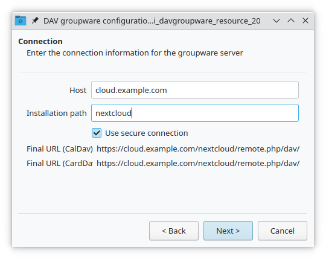

المزامنة مع جهات الاتصال Kontact في KDE
تطبيقات KDE ـ : KOrganizer و Kalendar و KAddressBook يمكن مزامنتها مع تطبيقات نكست كلاود: التقويم calendar و جهات الاتصال contacts و المهام tasks .
هذا يمكن تنفيذه باتباع الخطوات التالية اعتماداً على أي التطبيقات تستخدمها: KOrganizer أو Kalendar:
في KOrganizer ـ :
إفتَح KOrganizer ثم في قائمة التقويم (في الأسفل) أنقُر على زر الماوس الأيمن و اختَر "أضِف تقويماً"
Add Calendar:

من قائمة الموارد التالية، إختَر: مورد DAV لأدوات العمل التعاوني
DAV groupware resource:

في Kalendar ـ :
إفتَح Kalendar ثم في شريط القائمة إفتح الإعدادات ثم اختَر "مصادر التقويم"
Calendar Sourcesثم اختَر "أضِف تقويماً"Add Calendar:

من قائمة الموارد التالية، إختَر: مورد DAV لأدوات العمل التعاوني
DAV groupware resource:

في KOrganizer و Kalendar ـ :
Enter your username. As password, you need to generate an app-password/token (Learn more):

إختَر نكست كلاود "Nextcloud" كخادوم Groupware للعمل التعاوني:

Enter your Nextcloud server URL and, if needed, installation path (anything that comes after the first /, for example
mynextcloudinhttps://example.com/mynextcloud). Then click next:

يمكنك الآن اختبار الاتصال، و الذي قد يستغرق بعض الوقت لابتداء الاتصال. إذا لم ينجح الأمر، يمكنك الرجوع و محاولة إصلاحه باستخدام إعدادات أخرى:


إختَر اسمًا لهذا المورد، على سبيل المثال
العملأوالمنزل'. افتراضيًا، تتم مزامنة كل من CalDAV (التقويم) و CardDAV (جهات الاتصال):

ملاحظة
يمكنك تعيين معدل تحديث يدوي لتقويمك وموارد جهات الاتصال عندك. بشكل افتراضي، يتم تعيين هذا الإعداد على 5 دقائق و التي يفترض أن تكون كافية لمعظم حالات الاستخدام. عند إنشاء موعد appointment جديد، تتم مزامنته مع نكست كلاود على الفور. قد ترغب في تغيير هذا لتوفير الطاقة أو خطة البيانات على الهاتف النقال، بحيث يمكنك التحديث بنقر زر الماوس الأيمن على العنصر في قائمة التقويم.
بعد بضع ثوانٍ إلى دقائق اعتمادًا على سرعة اتصالك بالإنترنت، ستجد التقويمات وجهات الاتصال الخاصة بك داخل تطبيقات KDE Kontact KOrganizer و Kalendar و KAddressBook بالإضافة إلى تطبيق Plasma Calendar الصغير: